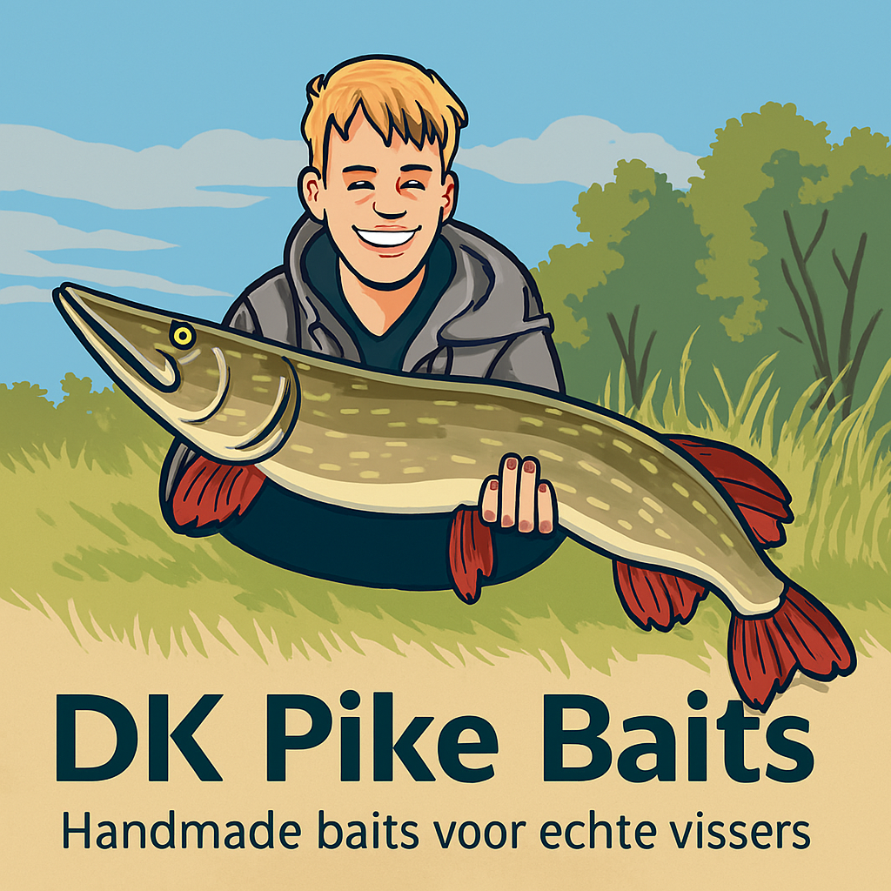

Welkom bij DK Pike Baits
Hier vind je handgemaakte kunstaas, getest en ontworpen door een echte snoekvisser. Alles is met zorg gebouwd voor de grootste vangsten.
Wie ben ik
Ik ben Daan, een creatieve visser met een passie voor kunstaas bouwen. Mijn eerste meterbak? Een snoek van 1m12 — en dat was pas het begin.
Mijn eerste meterbak – 1m12 snoek!